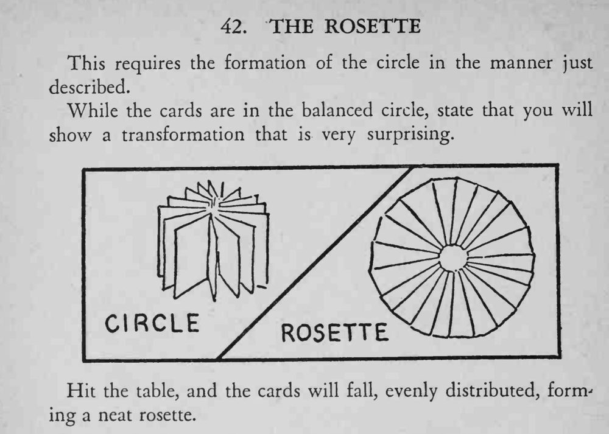

刚做好的纸牌圆环被一拍桌子，立刻散开成均匀的玫瑰花形。
拍桌子要拍得干脆，牌才会均匀散开。

This requires the formation of the circle in the manner just described. While the cards are in the balanced circle, state that you will show a transformation that is very surprising. circle Hit the table, and the cards will fall, evenly distributed, forming a neat rosette.